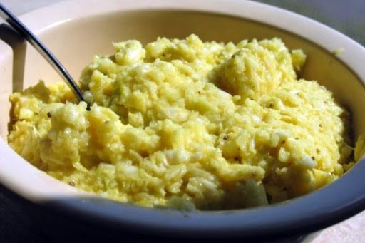

Eastern North Carolina Coleslaw

Description
The only slaw there is.
Ingredients
- One medium head of cabbage
- 1½ cups mayonnaise
- ⅓ cup golden mustard
- ¾ cup sweet pickled cubes
- 2 tablespoons apple-cider vinegar
- ½ cup sugar
- 1 tablespoon celery seed
- 1 ½ teaspoons salt
- ⅛ teaspoon fresh ground black pepper
Steps
- Keep cabbage cold until ready to use, and do not allow it to reach room temperature while preparing the slaw.
- Cut cabbage head in half and grate fine using a food processor or hand grater.
- In a large mixing bowl, combine cabbage, mayonnaise, mustard, sweet pickle cubes, vinegar, sugar, and salt with fresh ground black pepper.
- Mix thoroughly to combine all ingredients.
- Chill for at least one hour before serving.